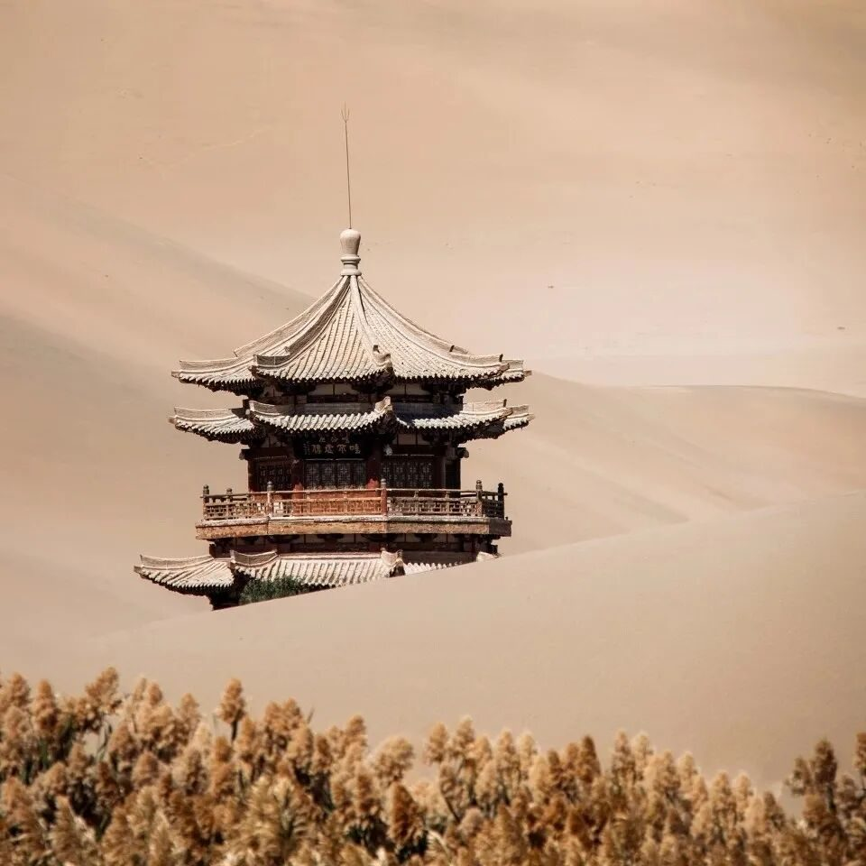
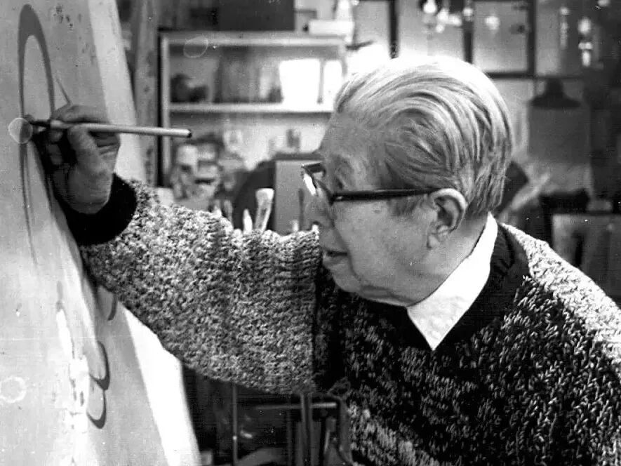
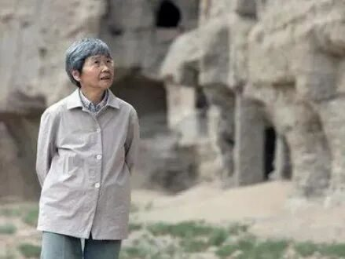
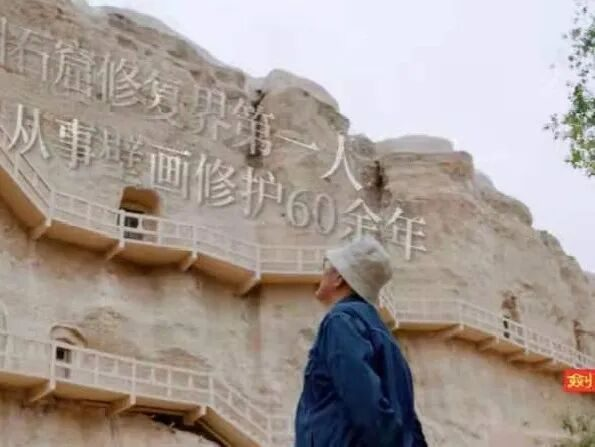

【煌然成篇·七】远方，不熄的梦想

在行者无疆遇见敦煌
如同橱窗里盛放的琳琅满目一般
是阜盛而过的年华熠熠生辉
敦煌定若远，一信动经年。
在这里，
行五十步穿越百年，
行百步穿越千年。
这里有道不尽的史诗篇章
和看不尽的大漠风光。
辗转千年，
也只有一个敦煌。
敦煌云展馆
让我们可以透过云端
在那片土地上
思考历史的脉络，
思考现在的繁荣，
思考未来的辉煌。
体会两千五百年前
由丝绸之路开启的敦煌传奇。
有千年敦煌的起起伏伏，
还有飞天南无的波澜壮阔。

如果说
这个世界上有一样东西
可以超过期待，
那一定是莫高窟。
没有亲自去到敦煌
一直是这次实践的一个遗憾，
未来，
我想去看看莫高窟的信仰，
看看沙与泉的两厢厮守，
看看玉门关的春风不度，
看看曾经的汉唐。
沉默了千年的敦煌，
在它被唤醒那一刻，
即迈向了消亡的命运。
敦煌终将会死去，
但是，
它会用一种方式活在中国。
莫高窟中优美的壁画，
在风沙与盐碱侵蚀下，
慢慢剥蚀当年的旖旎。
但后来，
有人一直在风沙洗礼出，
修复敦煌的信仰。
他们终究没有辜负
满山大佛700多双眼睛的期许。


敦煌，
就是我的信仰

我心归处是敦煌

人生贡献给敦煌
感觉没有虚度，
值得
流转于岁月的文化凝结，
以符号的形式存留，
封存记忆，
带来感动。
千年敦煌对敦煌守护人
无声的邀请，
同样也是他们
对敦煌作出的庄重承诺。
几十年，
对于千百年的文物而言，
只是一瞬。
对于一个人来说，
却已是一生。
我们能感受到
荣主任和吴老师
在与文物面对面中
打磨着岁月，
用匠心守护着古人智慧。
生命深处
对敦煌文化不顾一切的爱，
终是来自内心
无法平息的情怀。
我与文化的遇见
源于与行者无疆的遇见
在这里
我遇见了言念潇湘·长沙
遇见了聆谂丝韵·敦煌
遇见了星河灿烂，繁星陨落
遇见彩色的梦和许多美好
遇见你
便是最美的邂逅

来源 | 行者无疆实践团
文字 | 张清雅
排版 | 张清雅
审核 | 康艳虎 张清雅
行者无疆实践团
QQ：2758025831

随行者一起认识世界
长按二维码